Universidad Autónoma de Entre Ríos
Facultad de Ciencia y Tecnología
Trabajo Práctico N° 1
"Streaming de videojuegos"
Cátedra: Fundamentos de Computación
Profesores: Bioing. Ismael Cassi (ADJ), Lic. Paolo Orundés Cardinali (JTP)
Integrantes del Grupo: Schumacher Nahuel, Bifiger Iara, Frutos Santino, Villalba Ezequiel
Comisión: 2
Fecha de Entrega: 31 de octubre de 2025
El juego que elegimos como grupo para streamear es el FORTNITE
Fortnite es un juego de acción multijugador donde hasta 100 jugadores caen en una isla con el objetivo de ser el último en pie. Se combina disparos en tercera persona con construcción rápida de estructuras para cubrirse, atacar o escapar. Las partidas son intensas y llenas de acción, con la zona segura que se va reduciendo constantemente, lo que genera combates estratégicos y momentos impredecibles.
Para streaming, es perfecto: cada partida puede tener jugadas creativas, enfrentamientos épicos y situaciones inesperadas que capturan la atención de los espectadores, convirtiéndolo en un espectáculo visual entretenido y dinámico.
Requerimientos del sistema de Fortnite
Mínimos:
- Sistema operativo: Windows 10 de 64 bits, versión 1703
- CPU: Core i3-3225 de 3,3 GHz
- Memoria: 8 GB de RAM
- GPU: Intel HD 4000 en PC, AMD Radeon Vega 8
Recomendados:
- Sistema operativo: Windows 10/11 de 64 bits
- CPU: Core i5-7300U de 3,5 GHz, AMD Ryzen 3 3300U o equivalente
- Memoria: 16 GB de RAM o superior
- GPU: GPU con DX11 equivalente a NVIDIA GTX 960 o AMD R9 280
- Adicional: SSD NVMe
Requerimientos para jugar y transmitir en vivo:
- Gráfica: GTX 1660 Super 6GB VRAM
- RAM: 16GB
- Procesador: i3 10100F
- S.O.: Windows 11 64 bits
Comparación entre los juegos
Para estas comparaciones se utilizarán los componentes recomendados para una experiencia de juego satisfactoria.
FORTNITE
- SO: Windows 10/11 de 64 bits
- Procesador: Core i5-7300U de 3,5 GHz, AMD Ryzen 3 3300U o equivalente
- Memoria: 16 GB de RAM o superior
- Gráficos: GPU con DX11 equivalente a NVIDIA GTX 960 o AMD R9 280
- Red: Conexión de banda ancha a Internet
- Almacenamiento: Entre 40 GB y 66 GB de espacio disponible


COUNTER-STRIKE 2
- SO: Windows 10/11 de 64 bits (con la última actualización)
- Procesador: AMD Ryzen 5 (3600, 5500, 5600)
- Memoria: 16 GB de RAM
- Gráficos: NVIDIA® GeForce® GTX 1060 o AMD Radeon™ RX 580
- Red: Conexión de banda ancha a Internet
- Almacenamiento: 85 GB de espacio disponible

COD: WARZONE
- SO: Windows 10/11 de 64 bits (con la última actualización)
- Procesador: Intel® Core™ i5-6600K / Core™ i7-4770 o AMD Ryzen™ 5 1400
- Memoria: 12 GB de RAM
- Gráficos: NVIDIA® GeForce® GTX 1060 o AMD Radeon™ RX 580
- Red: Conexión de banda ancha a Internet
- Almacenamiento: 125 GB de espacio disponible

Comparando los requisitos:
Fortnite es el más liviano de los tres: pide una GPU GTX 960, procesador i5 de 7ª gen y ocupa menos espacio (40-66 GB).
Counter-Strike 2 pide más que Fortnite: GTX 1060/RX 580, Ryzen 5 y 85 GB, siendo un poco más exigente.
Call of Duty: Warzone es el más pesado: requiere buen CPU (i5-6600K o superior), GPU GTX 1060/RX 580 y ocupa 125 GB, siendo el que más espacio y potencia gráfica necesita.
Conclusión:
Hemos elegido Fortnite como el juego para streamear ya que es relativamente leve en cuanto a los componentes necesarios, y además es un juego que es bastante popular hoy día y mucha gente lo juega y consume contenido de este juego.
DISEÑO DE UNA PC ECONÓMICA PARA GAMING Y STREAMING
Este Trabajo tiene como objetivo construir una computadora de escritorio capaz de ejecutar y transmitir videojuegos de manera fluida, respetando un presupuesto máximo de 1000 dólares. Se busca mantener un equilibrio entre rendimiento, costo y estabilidad, incluyendo todos los periféricos necesarios para realizar streaming en plataformas como kick, Twitch o YouTube.
Selección del videojuego:
Juego elegido: Fortnite
Género: Battle Royale y construcción.
Modo de juego: multijugador en línea.
Popularidad: uno de los títulos más reconocidos y jugados a nivel mundial, ideal para crear contenido en streaming.
Fortnite combina acción, estrategia y creatividad, lo que lo convierte en un juego atractivo tanto para jugadores casuales como para streamers que buscan interactuar con su audiencia. 100 jugadores caen en una isla con el objetivo de ser el último en pie. Se combina disparos en tercera persona con construcción rápida de estructuras para cubrirse, atacar o escapar. Las partidas son intensas y llenas de acción, con la zona segura que se va reduciendo constantemente, lo que genera combates estratégicos y momentos impredecibles.
Requerimientos del sistema y comparación de juegos:
Requerimientos del sistema de Fortnite
Mínimos (para poder jugar):
Sistema operativo: Windows 10 de 64 bits (versión 1703 o superior)
Procesador (CPU): Intel Core i3-3225 (3.3 GHz) o equivalente
Memoria RAM: 8 GB
Gráficos (GPU): Intel HD 4000 o AMD Radeon Vega 8
Almacenamiento: 40–66 GB disponibles
Con estos requisitos el juego puede ejecutarse, aunque con calidad baja y FPS limitados (alrededor de 30-40 FPS). No es ideal para streaming ni para jugar de forma competitiva.
Recomendados (para una buena experiencia de juego):
Sistema operativo: Windows 10/11 de 64 bits
Procesador: Intel Core i5-7300U o AMD Ryzen 3 3300U
Memoria RAM: 16 GB
Gráficos: NVIDIA GTX 960 o AMD R9 280
Almacenamiento: SSD NVMe recomendado
Con esta configuración el juego corre de forma fluida, alcanzando entre 80 y 120 FPS en calidad media/alta. Es una base adecuada para luego transmitir.
Requisitos para jugar y transmitir en vivo:
Procesador: Intel Core i3-10100F o AMD Ryzen 5 3600
Gráficos: NVIDIA GTX 1660 Super (6 GB VRAM)
Memoria RAM: 16 GB
Sistema operativo: Windows 11 de 64 bits
Software adicional: OBS Studio para streaming
Esta configuración permite jugar a Fortnite y transmitir simultáneamente en 1080p/60 FPS, manteniendo estabilidad y buena calidad de imagen.
El uso de la codificación por hardware (NVENC) libera al procesador durante la transmisión, lo cual resulta ideal dentro de un presupuesto limitado.
COMPARACIÓN ENTRE LOS JUEGOS
Para estas comparaciones se utilizarán los componentes recomendados para una experiencia de juego satisfactoria. Esta información fue extraída de steam y epic games.
FORTNITE
SO: Windows 10/11 de 64 bits
Procesador: Core i5-7300U de 3,5 GHz, AMD Ryzen 3 3300U o equivalente
Memoria: 16 GB de RAM o superior
Gráficos: GPU con DX11 equivalente a NVIDIA GTX 960 o AMD R9 280
Red: Conexión de banda ancha a Internet
Almacenamiento: Entre 40 GB y 66 GB de espacio disponible
COUNTER-STRIKE 2
SO: Windows 10 de 64 bits (con la última actualización) o Windows 11 de 64 bits (con la última actualización)
Procesador: AMD Ryzen 5 (3600, 5500, 5600)
Memoria: 16 GB de RAM
Gráficos: NVIDIA® GeForce® GTX 1060 o AMD Radeon™ RX 580
Red: Conexión de banda ancha a Internet
Almacenamiento: 85 GB de espacio disponible
COD: WARZONE
SO: Windows 10 de 64 bits (con la última actualización) o Windows 11 de 64 bits (con la última actualización)
Procesador: Intel® Core™ i5-6600K / Core™ i7-4770 o AMD Ryzen™ 5 1400
Memoria: 12 GB de RAM
Gráficos: NVIDIA® GeForce® GTX 1060 o AMD Radeon™ RX 580
Red: Conexión de banda ancha a Internet
Almacenamiento: 125 GB de espacio disponible
Análisis comparativo
Fortnite es el más ligero y accesible. Su motor gráfico permite ajustar texturas y efectos para adaptarse a casi cualquier PC. Su bajo consumo de recursos lo convierte en una excelente opción para quienes quieren iniciar en el streaming con hardware económico.
Counter-Strike 2 eleva la exigencia técnica respecto al clásico CS:GO. Si bien es menos pesado que Warzone, demanda mayor estabilidad de CPU para mantener FPS altos en partidas competitivas.
Call of Duty: Warzone es el más pesado: requiere GPU de gama media-alta, más potencia de procesador y gran espacio en disco. No es viable para un equipo de menos de 1000 USD si se busca jugar y transmitir con fluidez.
Conclusión de la comparación
Tras analizar los tres títulos, se determinó que Fortnite es la opción más equilibrada. Combina buena optimización, amplia comunidad, bajo consumo de recursos y permite realizar transmisiones en 720p o 1080p con hardware accesible. Por estas razones, Fortnite fue el juego seleccionado para el desarrollo del proyecto.
Elección de componentes del equipo:
Para cumplir los requisitos (jugar Fortnite y transmitir en simultáneo) se ha optado por una PC de escritorio por su mejor relación costo / rendimiento y su capacidad de actualización futura.
El objetivo fue seleccionar componentes que permitan jugar Fortnite con alta fluidez y, al mismo tiempo, transmitir usando codificación por hardware (NVENC) o por CPU según convenga, manteniéndose dentro del presupuesto objetivo (1000 USD cambio a pesos de $1457,73ars). También se incorporan periféricos esenciales como teclado, ratón, monitor, micrófono, cámara y estabilizador.
Componentes principales
| Componente | Modelo Seleccionado | Especificaciones | Precio $(Ars) | Fuente |
|---|---|---|---|---|
| Procesador (CPU) | Amd Ryzen 5 5600x C/cooler | En la sección de justificación | $236.283 | thegamershop.com.ar |
| Placa Madre | Motherboard Asus B550-F ROG Strix GAMING WIFI II AM4 | En la sección de justificación | $352.600 | www.maximus.com.ar |
| Tarjeta Gráfica | VIDEO GeForce RTX 3050 6GB ASUS DUAL OC | En la sección de justificación | $331.739,89 | fullh4rd.com.ar |
| Memoria RAM | MEMORIA 16GB DDR4 3200 HIKSEMI ARMOR WHITE | En la sección de justificación | $60.739,47 | fullh4rd.com.ar |
| Almacenamiento | Disco Solido Ssd M2 Pci-E Nvme 1Tb Aimerican Agility | En la sección de justificación | $84.999 | www.mexx.com.ar |
| Fuente de Poder | FUENTE AUREOX ARXGU 650W 80 PLUS BRONZE | En la sección de justificación | $81.211,14 | fullh4rd.com.ar |
| Gabinete | GABINETE EAGLE WARRIOR CG 20AA 4FAN ARGB ATX | En la sección de justificación | $53.834,99 | fullh4rd.com.ar |
| UPS | Ups Trv 650A Neo | En la sección de justificación | $ 85.679 | www.venex.com.ar |
| Periféricos | Combo Gamer Genius GX Auri+Teclado+Mouse | En la sección de justificación | $ 58.799 | www.venex.com.ar |
| Webcam | Webcam Logitech C920s 1080p HD Stereo C/Tapa | En la sección de justificación | $ 130.199 | www.venex.com.ar |
| Monitor | Monitor SolarMax 22″ | En la sección de justificación | $143.759 | thegamershop.com.ar |
| Licencia de Windows | Microsoft Windows 10 OEM Home Key GLOBAL | En la sección de justificación | $17.383,37 | www.eneba.com |
| Total | $1.556.015,72 | $1067,43USD |
Observación:
El presupuesto supera los $1000USD del presupuesto permitido por $67,43USD.
Justificación de componentes:
Procesador (CPU) — AMD Ryzen 5 5600X (con cooler)
Especificaciones clave
Arquitectura: Zen 3.
Núcleos / Hilos: 6 núcleos / 12 hilos.
Frecuencia base / boost: ≈ 3.7 GHz base / hasta 4.6 GHz boost.
Caché L3: 32 MB.
TDP: ~65 W.
Incluye cooler: Air cooler.

Justificación
Excelente rendimiento por núcleo y buen rendimiento multinúcleo para tareas de juego + streaming. Con 6/12 hilos manejan bien OBS y otras tareas al mismo tiempo. Es una opción con muy buena relación precio/rendimiento para gaming en 1080p y transcodificación ligera. Su bajo TDP facilita elección de fuente y refrigeración.
Placa Madre — ASUS ROG Strix B550-F Gaming WiFi II (AM4)
Especificaciones clave
Chipset: B550 (soporte Ryzen 3000/5000).
Factor: ATX.
Soporte PCIe 4.0 en CPU/slots adecuados.
VRM de calidad para overclock ligero/estabilidad.
Conectividad: Wi-Fi integrado, múltiples puertos USB, M.2 NVMe, soporte para 4 módulos de RAM.

Justificación:
Placa de gama media-alta: estabilidad, buenas fases de alimentación (VRM) y conectividad avanzada. Ideal si pensás actualizar CPU/GPU en el futuro (soporte PCIe4, ranuras M.2). El Wi-Fi integrado y el ecosistema ROG facilitan opciones de expansión y una experiencia “lista para gaming”.
Tarjeta Gráfica (GPU) — GeForce RTX 3050 6GB ASUS DUAL OC
Especificaciones clave
Arquitectura: Ampere (NVIDIA).
Memoria: modelo listado como 6 GB
Soporte: NVENC actualizado, soporte para DLSS, trazado de rayos básico. Orientada a 1080p gaming con buenos fps en muchos títulos.

Justificación
NVENC permite codificar el streaming con alta calidad sin cargar la CPU (clave para jugar + transmitir). Rendimiento en 1080p estable en Fortnite y otros juegos competitivos; buena relación precio/rendimiento para un build de ~1000 USD.
Memoria RAM — HIKSEMI Armor White DDR4 3200 MHz (16 GB)
Especificaciones clave
Modelo HS-UDIMM-ARMOR-WHITE
Capacidad 16GB
Interface DDR4 - 3200MHz
Pin 288pin
Tamaño (L×A×A mm) 133.25*31.25*1.4
Temperatura de Trabajo 0 °C to 85 °C
Peso 15g
<
Justificación
Ofrece un excelente equilibrio entre velocidad, capacidad y precio. Los 16 GB garantizan un rendimiento fluido en tareas de edición, gaming y streaming, mientras que la frecuencia de 3200 MHz asegura buena compatibilidad con plataformas AMD.
Almacenamiento — SSD M.2 NVMe 1 TB (American Agility)
Especificaciones clave
Marca: Aimerican
Línea: Agility
P/N: AISSD1TBNVM3
UPC/EAN: 850073872031
Capacidad: 1 TB
Interfaces: PCIe NVMe 3.0
Factor de formato: M.2 2280
Aplicaciones: PC/Notebooks
Ubicación del disco: Interno

Justificación
Mejora dramática en tiempos de arranque, carga de juegos y manejo de grabaciones/archivos de streaming. 1 TB es aconsejable si vas a instalar varios juegos grandes y guardar grabaciones.
Fuente de poder (PSU) — Aureox ARXGU 650W 80+ Bronze
Especificaciones clave
Potencia: 650 W.
Certificación: 80+ Bronze (eficiencia aceptable).
Conectores: ATX 24-pin, EPS 8-pin CPU, PCIe 6/8-pin (según modelo).

Justificación
650 W provee margen para la RTX 3050 y futuros upgrades (más de 20–30 % de margen sobre consumo típico). Certificación Bronze asegura eficiencia y menos desperdicio energético; importante para estabilidad y vida de componentes.
Gabinete — Eagle Warrior CG 20AA (4 fans ARGB) ATX
Especificaciones clave
Tipo: Gaming Case
Material del Chasis: Metal SPCC de 0.45 mm, pintura Negra
Panel Frontal: Hierro con orificios
Color: Negro
Panel Lateral Izquierdo: Vidrio Templado
Soporte de Placa Base (M/B): ATX / micro ATX / ITX
Panel Frontal E/S:
USB 3.0 x 1
USB 2.0 x 2
HD Audio
Bahías de Unidad:
3.5" HDD x 2
2.5" SSD x 1
Ranuras de Expansión: 7 PCS
Longitud Máxima de Tarjeta Gráfica (VGA): 310 mm
Altura Máxima de Cooler de CPU: 158 mm
Ventiladores:
Frontal: 3 x 12 cm (Opcional)
Trasero: 1 x 12 cm (Opcional)
Ventiladores Incluidos: Conjunto de 4 ventiladores ARGB Diamond (Frontal y Trasero con modelo FCF2S7W5011C), con 16 luces externas y 8 luces internas, marco Blanco + aspas blanco leche, 11 aspas.
Panel Frontal: Con logotipo de Eagle Warrior
Embalaje: Con caja marrón con logotipo de Eagle Warrior
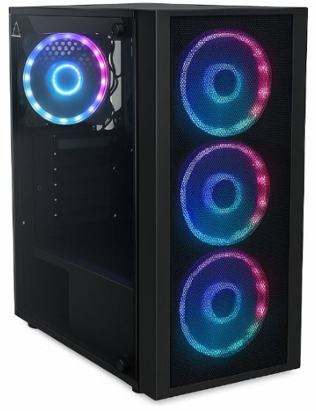
Justificación
Buen flujo de aire (4 fans) ayuda a mantener temperaturas bajas con GPU y CPU bajo carga (juego + streaming). Espacio suficiente para montaje y futuras ampliaciones.
UPS — TRV 650A Neo (650 VA)
Especificaciones clave
Control: por microprocesador
Tecnología: intecativa en linea
Protección contra picos de tensión: Si
Batería: 650VA
Autonomía: 10min
Protección contra sobrecargas y cortocircuitos: si
Arranque en frío: SI
Carga de batería con el UPS apagado: si
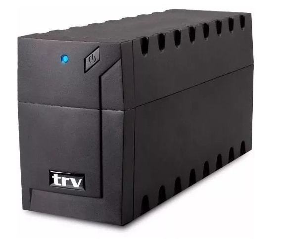
Justificación
Protege datos y hardware ante cortes repentinos; permite apagar el sistema correctamente y evitar corrupción. Requisito explícito de la consigna: “mantener la computadora encendida por unos minutos”.
Periféricos — Combo Gamer Genius (auriculares + teclado + mouse)
Especificaciones clave
Mouse GX Scorpion M300
Sensor: Óptico hasta 2400 DPI
Botones: 4 (izquierda, derecha, scroll, cambio DPI)
Iluminación: RGB respirable 7 colores
Interfaz: USB, cable de 1.5 m
Peso: 81 g
Dimensiones: 72 x 119 x 39 mm
Teclado GX Scorpion K7 Plus
Tipo de tecla: Estilo mecánico, membrana
Iluminación: LED RGB respiratorio
Conexión: USB 2.0, cable 1.8 m
Teclas multimedia: 12
Anti-Ghosting: Sí, 19 teclas
Resistente a derrames: Sí
Peso: 711 g
Dimensiones: 449 x 138 x 37 mm
Auriculares GX HS-G560
Drivers: 50 mm
Respuesta de frecuencia: 20Hz~20KHz
Impedancia: 16 Ω ± 15%
Sensibilidad: 103 ± 3 dB
Micrófono: Sí, con control de volumen y mute
Conexión: Dual Plug, cable 2 m
Sonido: Stereo
Peso: 305 g
Dimensiones: 187.5 x 226.6 x 97.2 mm
Compatibilidad
Sistemas: Windows 8, 10, 11 o posterior, macOS X 10.8 o posterior
Requerimientos: Puerto USB disponible
Accesorios
Incluye: Teclado, mouse, auriculares, guía rápida

Justificación
Buen equilibrio entre funcionalidad y precio para empezar a streamear sin invertir en periféricos caros. Aporta todo lo mínimo necesario para jugar y comunicarse en directo.
Webcam — Logitech C920s 1080p HD (con tapa)
Especificaciones clave
Resolución máxima: 1080p / 30fps - 720p / 30fps
Tipo de enfoque: enfoque automático
Micrófono incorporado: estéreo
El clip universal para trípode se adapta a laptops, LCD o monitores
Longitud del cable: 5 pies (1.5 m)
Incluye: tapa física para privacidad.
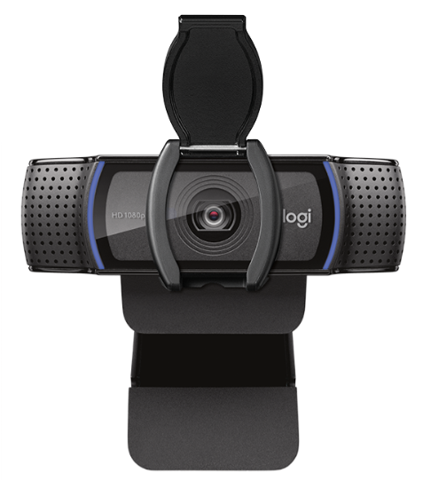
Justificación
Standard de la industria para streamers; buena nitidez y color.
Justifica su precio por la calidad de imagen y la compatibilidad plug-and-play.
Monitor — SolarMax 22"
Especificaciones clave
Tamaño: 22 pulgadas.
Resolución: normalmente Full HD (1920×1080)
Frecuencia: 60–75 Hz (según modelo).
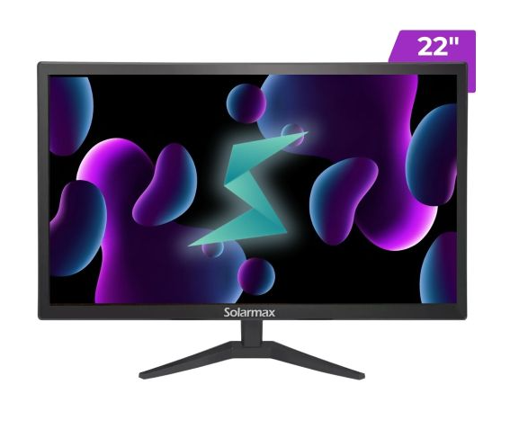
Justificación
22" es un tamaño estándar para escritorios pequeños y suficiente para 1080p. Es una pieza donde se puede recortar si es necesario (monitor más barato o segundo monitor usado).
Licencia de Windows — Microsoft Windows 10 OEM Home Key (GLOBAL)
Especificaciones clave
Tipo: clave OEM (licencia vinculada a hardware).
Sistema: Windows 10 Home (actualizable a Windows 11 en la mayoría de equipos).

Justificación
Necesaria para activar el sistema operativo y obtener actualizaciones y compatibilidad. Opción económica comparada con licencia Retail; válida si no necesitás mover la licencia a otro equipo.
Reducción de costos de los componentes:
| Componente | Modelo Seleccionado | Especificaciones | Precio $(Ars) | Fuente |
|---|---|---|---|---|
| Gabinete | GABINETE MSI MAG SHIELD M301 1FAN | Aca van especificaciones | $38.268,58 | fullh4rd.com.ar |
| Placa Madre | Motherboard MSI B550M Pro-VDH AM4 | Aca van especificaciones | $132.900,00 | www.maximus.com.ar |
| Monitor | Monitor LED Solarmax 19" SX19F2 HD HDMI / VGA | Aca van especificaciones | $89.600,00 | www.maximus.com.ar |
| Webcam | Webcam Natec Lori Plus Full HD Autofocus | Aca van especificaciones | $50.700,00 | www.maximus.com.ar |
| Componente | Modelo Anterior | Precio (ARS) | Modelo Nuevo | Precio (ARS) | Diferencia (ARS) |
|---|---|---|---|---|---|
| Gabinete | Eagle Warrior CG 20AA 4FAN ARGB | $53.834,99 | MSI MAG SHIELD M301 | $38.268,58 | –$15.566,41 |
| Placa Madre | Asus B550-F ROG Strix Gaming WIFI II | $352.600,00 | MSI B550M PRO-VDH | $132.900,00 | –$219.700,00 |
| Monitor | SolarMax 22″ | $143.759,00 | SolarMax 19″ SX19F2 | $89.600,00 | –$54.159,00 |
| Webcam | Logitech C920s 1080p | $130.199,00 | Natec Lori Plus Full HD | $50.700,00 | –$79.499,00 |
| Total | $680.392,99 | $311.468,58 | -$368.924,41 | ||
| $466,75USD | $213,67USD | -$253,08USD |
| Antes | En USD antes | Ahora | En USD ahora | |||||
|---|---|---|---|---|---|---|---|---|
| Total Presupuesto | $1.556.015,72 | $1067,43USD | $1.187.091,31 | $814,34USD |
Observación:
El presupuesto está dentro de los $1000USD del presupuesto permitido, además de estar todo en orden también sobro como $ 185,66 USD
Comparativa y justificación de los reemplazos
Gabinete
Antes: Eagle Warrior CG 20AA (4 fans ARGB).
Ahora: MSI MAG SHIELD M301 (1 fan preinstalado).
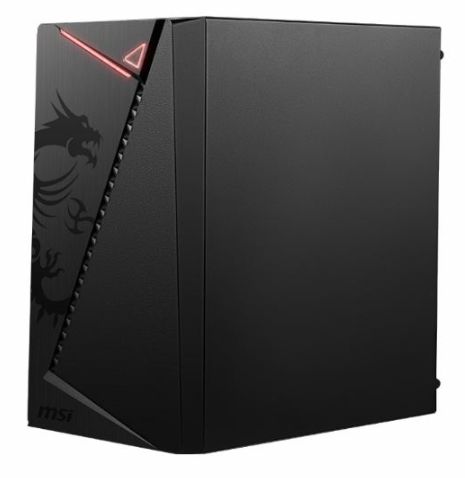
Justificación del cambio:
El modelo Eagle Warrior incluía iluminación ARGB y mayor ventilación, pero su costo era elevado en relación al resto del equipo.
El MSI MAG SHIELD M301 ofrece buena calidad de construcción, diseño compacto y materiales sólidos a un precio mucho más accesible. Aunque cuenta con menos ventiladores, mantiene una refrigeración suficiente para los componentes elegidos y permite agregar fans adicionales en el futuro.
Placa madre (Motherboard)
Antes: ASUS ROG Strix B550-F Gaming WiFi II.
Ahora: MSI B550M PRO-VDH.

Justificación del cambio:
La ASUS ROG Strix es una placa de gama alta con conectividad WiFi integrada, múltiples puertos M.2 y mejor sistema de refrigeración VRM. Sin embargo, gran parte de esas características no son indispensables para el uso previsto (gaming y streaming).
La MSI B550M PRO-VDH mantiene compatibilidad con los mismos procesadores Ryzen y brinda las funciones esenciales a un costo notablemente menor, optimizando el presupuesto sin comprometer la estabilidad ni la expansión básica.
Monitor
Antes: Monitor SolarMax 22″ Full HD.
Ahora: Monitor SolarMax 19″ SX19F2 HD (HDMI/VGA).

Justificación del cambio:
El modelo de 22″ Full HD ofrecía mayor tamaño y resolución, pero su diferencia de precio no se traduce en una mejora crítica para tareas de streaming y uso general.
El SolarMax de 19″ sigue brindando buena nitidez, conexión HDMI y bajo consumo energético. La reducción de tamaño es mínima en términos prácticos, y el ahorro permite redistribuir presupuesto a componentes de mayor impacto en el rendimiento.
Webcam
Antes: Logitech C920s Full HD (1080p, autofocus, micrófono dual).
Ahora: Natec Lori Plus Full HD (autofocus).

Justificación del cambio:
La Logitech C920s es una webcam profesional muy popular, pero su precio elevado la hace poco rentable en un presupuesto ajustado.
La Natec Lori Plus ofrece resolución Full HD y enfoque automático a un costo significativamente menor. Cumple adecuadamente para transmisiones y videollamadas, sacrificando solo algunas funciones secundarias como el micrófono dual y la corrección automática de luz avanzada.
Software para Streaming
Para realizar transmisiones en vivo del videojuego seleccionado, se optó por utilizar el programa OBS Studio (Open Broadcaster Software), una de las herramientas más populares y completas para streaming gratuito y de código abierto.
OBS Studio permite capturar la pantalla, agregar cámaras, micrófonos, superposiciones gráficas, alertas y transmitir directamente a plataformas como Twitch, YouTube o Kick.
Gratuito y de código abierto (sin licencias de pago).
Compatible con Windows, macOS y Linux.
Permite grabar y transmitir simultáneamente.
Soporte para múltiples fuentes de video y audio.
Integración con plataformas de streaming populares.
Alta personalización mediante escenas, filtros y transiciones.
Configuración recomendada
Parámetros de configuración recomendados para realizar transmisiones fluidas y de buena calidad utilizando la PC seleccionada.
Configuración general
Modo de salida: Avanzado (esto te da más control).
Prioridad del proceso: Alta.
Carpeta de grabación: SSD (el mismo NVMe), no el escritorio.
Tema: Oscuro (opcional, mejora visibilidad en configuraciones largas).
Salida → Streaming
Pestaña "Emisión":
Codificador: NVENC (NVIDIA) (usa la GPU RTX 3050, libera carga del CPU).
Control de tasa de bits (Rate Control): CBR (constante).
Tasa de bits (Bitrate):
1080p a 60 fps → 6000 kbps.
720p a 60 fps → 4500 kbps (si tu internet es más limitado).
Intervalo de fotogramas clave: 2 (requerido por la mayoría de plataformas).
Preset: Quality (si notás lag, bajá a Performance).
Tuning: High Quality.
Look-ahead: desactivado.
Psycho Visual Tuning: activado (mejora detalle en movimiento).
GPU: 0
B-frames: 2
Salida → Grabación (si querés guardar tus streams)
Tipo: Estándar.
Formato: mp4 (o mkv si querés más seguridad ante cortes).
Codificador: NVENC (NVIDIA)
Tasa de bits: 12000–16000 kbps (buena calidad sin saturar espacio).
Audio: 320 kbps.
Carpeta: SSD NVMe (para evitar caídas de rendimiento).
Video
Resolución base (canvas): 1920x1080
Resolución de salida (scaled):
1920x1080 si querés máxima calidad,
1280x720 si priorizás rendimiento o conexión más débil.
Filtro de escalado: Lanczos (32 samples) (mejor calidad de reescalado).
FPS: 60 (para fluidez en juegos rápidos) o 30 (si querés reducir carga).
Audio
Tasa de muestreo: 48 kHz (coincidir con Windows → Panel de Sonido → Propiedades del micrófono).
Micrófono: seleccioná el Natec Lori Plus (si no tiene micrófono propio, usa el que agregues).
Bitrate de audio (en Salida → Streaming): 160 kbps (voz limpia sin gastar ancho de banda).
Fuentes recomendadas
Captura de juego: para el gameplay directo.
Captura de ventana: para menús o aplicaciones.
Dispositivo de video: tu webcam.
Fuente de audio: micrófono + salida del sistema (juego).
Superposiciones (overlays): PNG o texto, nada de efectos pesados.
Internet mínimo recomendado
Subida mínima:
6 Mbps para 1080p60
4 Mbps para 720p60
Rendimiento estimado
Equipo base considerado:
AMD Ryzen 5 5600X, NVIDIA RTX 3050, 16 GB DDR4 3200, SSD NVMe 1 TB, PSU 650 W, OBS con NVENC.
FPS estimados (Fortnite)
Solo juego (sin transmitir)
Resolución 1080p, calidad alta/epic: ≈ 100–140 FPS.
Resolución 1080p, calidad ultra con trazado desactivado: ≈ 90–120 FPS.
Juego + streaming (OBS usando NVENC, stream 720p60)
Resolución juego 1080p, stream 720p60: ≈ 90–130 FPS (dependiendo de escena, distancia de draw, cantidad de efectos).
Juego + streaming (OBS usando NVENC, stream 1080p60)
Resolución juego 1080p con settings ajustados a media-alta: ≈ 60–90 FPS.
Uso estimado de CPU / GPU / RAM (valores aproximados en carga)
GPU (RTX 3050)
Solo juego 1080p: ~60–85% de utilización en escenas intensas.
Juego + stream (NVENC): ~65–95% (NVENC no reduce uso de GPU para render; la GPU sigue trabajando para el juego).
CPU (Ryzen 5 5600X)
Solo juego: ~25–45% dependiendo del título y de hilos usados.
Juego + stream (NVENC): ~35–60%
Juego + stream (x264 muy alto): > 80%
RAM
Uso típico en juego + OBS: 8–12 GB; con otras apps abiertas puede acercarse a los 14–15 GB. Con 16 GB estás en límite razonable; 32 GB daría más margen para multitarea intensa.
Temperaturas previstas (rangos típicos)
GPU: 60–80 °C bajo carga sostenida (dependiendo flujo de aire).
CPU: 55–75 °C bajo carga (con cooler de stock/aftermarket y buena ventilación).
SSD NVMe: 35–60 °C según case/ventilación.
Consumo de red y tamaños de grabación (cálculo paso a paso)
Recomendaciones de bitrate para streaming:
1080p60 → 6000 kbps (6.000 kbps) recomendado.
720p60 → 4500 kbps (4.500 kbps) recomendado.
Tamaño por hora de stream:
Cálculo para 6000 kbps:
6000 kbps = 6.000 kilobits por segundo.
bits por hora = 6.000 × 1.000 × 3.600 = 21.600.000.000 bits.
bytes por hora = 21.600.000.000 / 8 = 2.700.000.000 bytes.
GB por hora = 2.700.000.000 / 1.000.000.000 = 2,7 GB/hora.
Cálculo para 4500 kbps:
4500 × 1.000 × 3.600 = 16.200.000.000 bits/hora.
/8 = 2.025.000.000 bytes/hora.
/1e9 = 2,025 GB/hora.
Cálculo para grabación a 12000 kbps (si grabás localmente a alta calidad):
12.000 × 1.000 × 3.600 = 43.200.000.000 bits/hora.
/8 = 5.400.000.000 bytes/hora.
/1e9 = 5,4 GB/hora.
Impacto del encoder (NVENC vs x264)
NVENC (recomendado con RTX 3050):
Ventaja: baja carga de CPU, buena calidad moderna (especialmente en las últimas generaciones).
Recomendado para streaming simultáneo: mantiene juego fluido y buen stream sin necesidad de una CPU muy potente.
x264 (CPU):
Ventaja: buena calidad por bitrate si la CPU lo soporta.
Desventaja: para 1080p60 con buena calidad exige mucho CPU (puede elevar uso a >80% y reducir FPS del juego). No recomendado en tu build para 1080p60 a alta calidad.
Posibles mejoras futuras
Con un presupuesto más amplio, es posible realizar mejoras que incrementen el rendimiento de la PC, la calidad del streaming y la experiencia de juego general. En la tabla siguiente se detallan algunas opciones recomendadas para optimizar el sistema a futuro indicando su prioridad y como se notaría la mejora en sí.
| Prioridad | Componente / Periférico | Mejora sugerida | Qué mejoraría notablemente |
|---|---|---|---|
| 1 | GPU → RTX 4060 / RTX 4060 Ti | Aumento de potencia gráfica y VRAM (más núcleos, mejor NVENC) | FPS sostenidos más altos en 1080p/1440p, posibilidad de jugar en calidad ultra y stream 1080p60 sin tocar ajustes; mejor uso de DLSS y más margen para juegos futuros. |
| 2 | CPU → Ryzen 7 7700 / Intel i7 12700 | Más núcleos/hilos y rendimiento por núcleo | Mejor multitarea (juego + stream + grabación + chat/overlays), menor riesgo de cuello de botella al usar x264, tiempos de encoding más rápidos si se usa CPU. |
| 3 | RAM → 32 GB DDR4/DDR5 3600+ | Más capacidad y/o mayor frecuencia | Mejor manejo de multitarea intensa (navegadores, OBS, grabación, aplicaciones de edición), menor uso de swap y más estabilidad en sesiones largas. |
| 4 | Almacenamiento → NVMe Gen4 2 TB | Mayor velocidad y capacidad | Tiempos de carga instantáneos, almacenamiento suficiente para grabaciones largas en alta calidad, menor riesgo de I/O bottleneck durante grabación. |
| 5 | Fuente (PSU) → 750–850 W 80+ Gold | Más potencia y eficiencia | Soporta GPUs y CPUs más potentes con margen, temperaturas/ruido menores y mayor fiabilidad a largo plazo. |
| 6 | Refrigeración CPU / Case fans → AIO 240/280 mm o buen cooler + fans de alta calidad | Mejor disipación térmica | Temperaturas más bajas, más estabilidad en sesiones largas y posibilidad de overclock ligero; reduce throttling. |
| 7 | Monitor → 1440p 144 Hz (o 1080p 240 Hz para competitivo) | Mejor resolución/refresh | Mejor experiencia visual en juego; mayor precisión en juegos competitivos y vsync/tearing reducido; mejora percepción de calidad durante streaming. |
| 8 | Micrófono → Shure SM7B + interfaz o Electro-Voice RE20 | Calidad de voz profesional | Sonido mucho más claro, reducción de ruido ambiente, mejora notable en la experiencia del espectador y profesionalidad del canal. |
| 9 | Cámara → DSLR / Mirrorless + capturadora (Elgato Cam Link 4K) | Sensor grande y control de imagen | Imagen de alta calidad (mejor bokeh, color, luz), aspecto “profesional” en el stream; posibilidad de 60fps/4K para reencodes. |
| 10 | Capturadora externa → Elgato 4K60 S+ | Captura de cámaras o consolas sin carga al PC | Permite usar cámara externa/console passthrough sin impactar CPU/GPU; útil para multi-source streaming. |
| 11 | Red / Router → Router Wi-Fi 6 + cableado CAT6 / conexión simétrica | Más ancho de banda estable y baja latencia | Streams más estables, menor packet loss, mejor upload sustentable para 1080p60; menor lag en juegos online. |
| 12 | UPS → 1500 VA (online/line-interactive) | Mayor autonomía y protección | Más minutos de respaldo, protección ante variaciones de red prolongadas y seguridad para apagados controlados. |
| 13 | Periféricos gaming → Teclado mecánico TKL + ratón de gama media-alta | Mejor ergonomía y precisión | Mayor confort en sesiones largas, mejor respuesta en juegos competitivos y posibilidad de personalización. |
| 14 | Iluminación / Fondo → Key light + softbox + fondo verde | Mejor iluminación y composición visual | Imagen más profesional, mejor chroma key si usás fondo verde, reduce ruido en webcam y mejora calidad visual del stream. |
Uso de Inteligencia Artificial
1. Capturas de interacción con la IA


Reflexión:
Estoy en desacuerdo con la recomendación de elegir el AMD Ryzen 7 5700X3D o el Intel i5-14600K para streamear Fortnite con un presupuesto de $1000 USD. Si bien estos procesadores ofrecen un rendimiento excelente, su costo total y el de los componentes acompañantes (GPU, RAM, placa madre DDR5) exceden significativamente el presupuesto. Por eso, opté por el AMD Ryzen 5 5600X, que ofrece 6 núcleos y 12 hilos, suficiente para jugar Fortnite a 1080p y transmitir en 720p–1080p simultáneamente. Esta elección permite mantener el presupuesto dentro del límite, sin sacrificar un rendimiento adecuado en juegos ni streaming. Además, al ser compatible con DDR4 y placas madre más económicas, se optimiza la relación costo/rendimiento de toda la PC, lo que hace que la construcción sea más viable y equilibrada.


Reflexión:
Estoy en desacuerdo con la recomendación de usar una notebook para streamear Fortnite con un presupuesto limitado. Aunque la IA explica correctamente las diferencias entre GPU integrada y dedicada, mi elección fue una PC de escritorio porque ofrece mucho mejor rendimiento por el mismo precio, mayor capacidad de actualización y más opciones de componentes que se adaptan al presupuesto de $1000 USD. En particular, aunque una notebook con GPU dedicada como la MSI GF63 11UC-262 ofrece streaming a 1080p, su costo es significativamente más alto y no permite reemplazar componentes fácilmente ni agregar periféricos económicos de calidad, algo que sí se puede hacer con una PC de escritorio. Por eso, opté por un Ryzen 5 5600X + RTX 3050 en escritorio, que garantiza un rendimiento similar o superior en Fortnite y streaming, manteniendo el presupuesto controlado y dejando margen para periféricos y otros accesorios.
2. Tabla comparativa generada con ayuda de IA + validación

Fuente de validación:
AMD Ryzen 5 5600X
En la página de venta de mexx.com dicho procesador coincide con los resultados de chatgpt. Lo único que no coincide del todo bien es el precio a que en dicha página el componente es mucho más barato ($88USD) que el margen de precios que dijo la IA.
Intel Core i5 12400F
Al igual que el procesador anterior también se encontró información de este procesador en la página de mexx.com donde cada una de sus especificaciones son exactas, incluyendo el precio del producto que esta dentro del margen que dijo chatgpt ($175USD).
Intel Core i5 13400F
En este caso se buscó la fuente de la página oficial de Intel (intel.la). Donde cada dato proporcionado por la inteligencia artificial es correcto, exceptuando el precio el cual no esta tan diferente del mencionado, pero si tiene una mínima variación en el margen. ($196.00-$206.00 USD)
Reflexión:
Como conclusión se llegó a elegir el componente AMD Ryzen 5 5600X debido a su capacidad, funcionalidad y sobretodo su gran precio económico en especial en tiendas argentinas.
3. Resumen técnico explicado con IA + traducción al “lenguaje común”
Explicaciones con IA
¿Qué es el bitrate en streaming?
Definición: Es la cantidad de datos que se envían por segundo durante una transmisión de video o audio en vivo. Se mide normalmente en kbps (kilobits por segundo) o Mbps (megabits por segundo).
Ejemplo práctico: Un bitrate bajo (por ejemplo 2 Mbps) transmite video con menos detalle, puede verse pixelado o borroso.
Un bitrate alto (por ejemplo 6–8 Mbps) transmite video más nítido y fluido, pero requiere más velocidad de internet.
Importancia: El bitrate determina la calidad visual de tu stream y debe equilibrarse con la velocidad de tu conexión a internet para evitar cortes o buffering.
¿Qué es la latencia?
Definición: Es el retraso de tiempo entre que ocurre un evento y cuando se ve o se recibe la información. En streaming se mide desde que la acción ocurre en tu juego hasta que tus espectadores la ven.
Ejemplo práctico: Si tu stream tiene una latencia de 5 segundos, lo que haces en el juego se verá con 5 segundos de retraso en la pantalla de tus espectadores.
Importancia:
Baja latencia → interacción más rápida con la audiencia.
Alta latencia → retraso notable, difícil de interactuar en tiempo real.
¿Qué función cumple la GPU en una PC gamer?
Definición: GPU (Unidad de Procesamiento Gráfico) es el “cerebro” que procesa gráficos y efectos visuales en tu computadora.
Funciones principales:
Renderizar gráficos 3D de juegos y simulaciones.
Procesar efectos visuales como sombras, luces, texturas y partículas.
Reducir la carga de la CPU, permitiendo que el juego y otras aplicaciones funcionen mejor.
En streaming, algunas GPUs también ayudan a codificar el video (como NVIDIA NVENC), aliviando la carga de la CPU y mejorando la calidad de transmisión.
Ejemplo práctico: Una GTX 1660 Super permite jugar Fortnite en 1080p a 60 FPS con todo al máximo, mientras una GPU integrada tendría que bajar los gráficos para mantener fluidez.
Traducción al “lenguaje común”
¿Qué es el bitrate en streaming?
El bitrate es básicamente la cantidad de datos que se mandan por segundo cuando transmitís en vivo. Cuantos más datos se envían, mejor se ve y se escucha el stream, pero también más internet necesitás.
Es el que define la calidad del stream, y hay que encontrar un punto justo entre buena imagen y estabilidad según la velocidad de tu internet.
¿Qué es la latencia?
La latencia es el tiempo de retraso que hay entre lo que pasa en el juego y lo que los espectadores ven en la transmisión. El tan conocido delay.
¿Qué función cumple la GPU en una PC gamer?
La GPU es el componente que se encarga de procesar los gráficos del juego: texturas, luces, sombras, partículas, todo lo visual.
Además, en el caso del streaming, muchas GPUs como las de NVIDIA, tienen un sistema especial (NVENC) que ayuda a codificar el video en tiempo real, lo que mejora la calidad del stream y evita que el juego se trabe.
4. Imagen generada con IA que represente el Trabajo
Comenzamos el Primer Streaming con fortnite

El prompt utilizado fue el siguiente: “Haceme la siguiente imagen: Una persona haciendo streaming de videojuegos desde una PC económica con monitor, teclado y webcam. Estilo realista, iluminación natural, ambiente de escritorio ordenado.” La imagen busca transmitir un pequeño setup gaming de streamer principiante.
Conclusiones Finales
¿Cómo te ayudó la IA en este trabajo?
La IA me ayudo bastante a darme ideas de cómo elegir componentes, pero, no fue lo suficientemente útil, parte del trabajo mejor lo hice yo. Lo que sí cabe destacar que la ayuda de la IA fue crucial para saber la compatibilidad de ciertos componentes.
¿Detectaste errores o información poco confiable? ¿Cómo lo resolviste?
Si totalmente, en especial la información de precios. Preferí buscar por mi propia cuenta.
¿En qué casos preferís buscar información manualmente en lugar de usar IA?
En casos de información técnica prefiero buscarlo yo manualmente, como las especificaciones de componentes, precios, etc. Además, la IA no sabe cómo buscar precios bastantes económicos porque buscando por mi cuenta los encontré más baratos a ciertos componentes. Yo solo usaría la IA para temas de sintaxis y otras cosas como guía, no como fuente fiable de información o investigación.
PC GAMER PARA STREAMING - PRESUPUESTO MEDIO
Lista de componentes y presupuesto
| Componente | Nombre | Precio | Fuente |
|---|---|---|---|
| Motherboard | Motherboard Gigabyte B550M K AM4 | $131.300 | https://www.maximus.com.ar/ |
| Microprocesador | Micro-AMD Ryzen 5500 4.2 Ghz AM4 | $131.600 | https://www.maximus.com.ar/ |
| Cooler | CPU Cooler Master Hyper 620s ARGB | $72.500 | https://www.maximus.com.ar/ |
| Memoria RAM | Memoria RAM Hiksemi Armor White 16GB 3200MHz DDR4 | $55.200 | https://www.maximus.com.ar/ |
| SSD | SSD 512 GB Verbatim Vi 3000 M2 NVMe PCIe x4 | $52.714,09 | https://www.maximus.com.ar/ |
| Gabinete | Gabinete Gamer Zer01 Gaming Orion 4 Fan ARGB | $64.998,16 | https://www.maximus.com.ar/ |
| Fuente | 850W Cooler Master MWE80 Plus Gold | $138.700 | https://www.maximus.com.ar/ |
| Monitor | MONITOR GAMER 24" MSI PRO MP243L E14 FHD 144HZ 1MS HDMI VGA | $195.991,95 | https://fullh4rd.com.ar/ |
| Disco duro | HD HDD 4TB WD PURPLE SATA III 3.5" VIDEOVIGILANCIA | $166.072,02 | https://fullh4rd.com.ar/ |
| Placa de video | VIDEO RADEON RX 6400 4GB SAPPHIRE PULSE LR | $242.994,75 | https://fullh4rd.com.ar/ |
| Teclado | Teclado Geminis RHOD 300 RGB | $31.500 | https://www.maximus.com.ar/ |
| Mouse | Mouse Fury Scopper RGB | $6.300 | https://www.maximus.com.ar/ |
| Auriculares | AURICULAR QBOX H039 USB JACK 3.5 Y 3 PINES GAMER CALL CENTER CELULAR H390 H110 | $11.639,96 | https://fullh4rd.com.ar/ |
| Licencia de Windows 11 | Windows 11 | $41.989,56 | https://fullh4rd.com.ar/ |
Total: $1.343.150,50
Justificación y comparación
Motherboard
La Tarjeta Madre Gigabyte Micro ATX B550M DS3H ofrece una sólida base para construir una computadora con procesadores AMD Ryzen. Sin embargo, es importante tener en cuenta la necesidad de actualizar el BIOS si planea usar un procesador de la serie Ryzen 5000 a comparación de la segunda opción de la Gigabyte A520M H, la cual No tiene las mismas características que el chipset B550, como soporte para PCIe 4.0, que la hace menos futura
Microprocesador
El micro-AMD Ryzen 5 5500 es más asequible que el Intel Core i5-14400F (la segunda opción de microprocesador). Aunque el Intel Core i5-14400F ofrece mejores prestaciones, el Ryzen 5 5500 sigue siendo un procesador capaz que ofrece un buen rendimiento para juegos y aplicaciones
Cooler
El Hyper 620s ARGB tiene 6 heatpipes de cobre y un diseño más eficiente, lo que le permite enfriar procesadores más potentes. al mismo tiempo, el ventilador del Hyper 620s ARGB tiene un nivel de ruido más bajo en comparación con el Cooler Master Hyper 212 (la segunda opción de Cooler)
Memoria Ram
La Hiksemi Armor White fue elegida ya que ofrece 16 GB de capacidad, mientras que la Silicon Power solo ofrece 8 GB también agregándole que el Silicon Power, el cual tiene una menor velocidad comparada a la Hiksemi Armor White que tiene una velocidad de 3200 MHz
SSD
El Verbatim Vi3000 elegido ya que es significativamente más rápido que el Kingston A400, lo que se traduce en tiempos de arranque más rápidos, carga de aplicaciones más rápida y mejor rendimiento general, sumándole que el Verbatim es ideal para tareas exigentes como edición de video, juegos y aplicaciones de alta intensidad
Gabinete
El Gabinete Gamer Zer01 Gaming Orion 4 Fan ARGB es significativamente más asequible que el Gabinete Gamer Zer01 Pollux, esa es la razón por la cual el gabinete Gamer Zer01 Gaming Orion 4 Fan ARGB fue elegido fue por motivos de presupuesto
Fuente
La Cooler Master MWE 850W, fue elegido por que ofrece una potencia significativamente mayor que la EVGA 650 GS como también más conectores que la EVGA 650 GS lo que la hace más versátil para conectar múltiples dispositivos. Pero sin desmeritar a ambas fuentes de alimentación tienen una eficiencia similar
Monitor
La frecuencia de refresco de 144Hz del Monitor Gamer 24" MSI PRO MP243L E14 lo cual es ideal para gaming y aplicaciones que requieren una alta velocidad de refresco, también el panel IPS del Monitor Gamer 24" MSI PRO MP243L E14 ofrece una excelente calidad de imagen y ángulos de visión amplios. Tambien la pantalla de 24 pulgadas del Monitor Gamer 24" MSI PRO MP243L E14 es más grande que la del Monitor Gamer 22" Samsung Essential S3 D300, por lo tanto, le da una ventaja ya que en juegos como el Fornite está bien tener una pantalla de ese tamaño
Disco duro
El WD Purple está diseñado específicamente para sistemas de videovigilancia, lo que conlleva un alto rendimiento en aplicaciones de grabación de video a diferencia del Seagate SkyHawk 4TB SATA III 3.5 el cual difiere en algunos puntos en calidad, además el WD Purple cuenta con tecnología de monitoreo de estado que permite detectar problemas potenciales y prevenir pérdidas de datos.
Placa de video
La SAPPHIRE Pulse Radeon RX 6400 tiene una frecuencia de hasta 2321 MHz, lo que la hace ligeramente más rápida que PowerColor Radeon RX 6400 Low Profile 4GB al mismo tiempo, La SAPPHIRE Pulse Radeon RX 6400 cuenta con un sistema de enfriamiento axial fan cooling technology que garantiza un rendimiento óptimo y una mayor durabilidad a futuro
Teclado
La función Anti-Ghosting del teclado Genesis Rhod 300 RGB garantiza una perfecta lectura de hasta 19 teclas pulsadas a la vez, lo que es esencial para juegos que requieren múltiples acciones, simultaneamente resistente a salpicaduras, lo que lo hace más duradero y fiable en un futuro, lo cual además de su precio lo hizo una buena opción comparándola con el teclado Logitech K120
Mouse
La caraterista del mouse Fury Scopper RGB, el cual es que es compatible con software de personalización, lo que permite a los usuarios ajustar la iluminación, la resolución y otros parámetros para optimizar su experiencia de juego. Fue lo que logro ser elegido sobre el Logitech G203
Auriculares
El micrófono de los QBOX H039 cuenta con cancelación de ruido, lo que garantiza una comunicación clara y sin distracciones durante las llamadas, una gran característica a la hora de hacer stream jugando a videojuegos
Tabla comparativa generada con ayuda de IA + validación
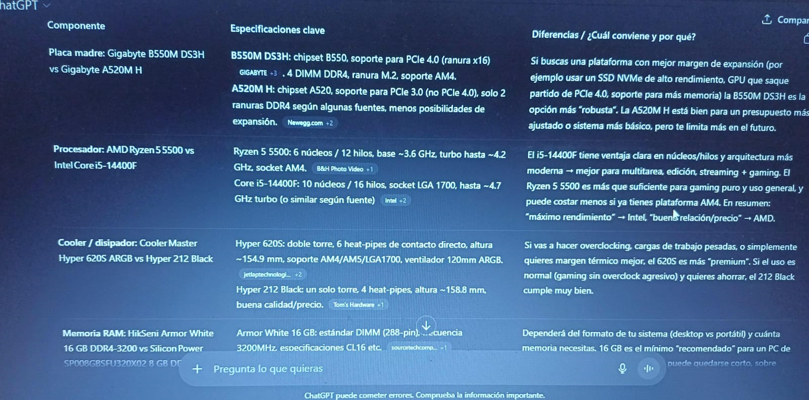
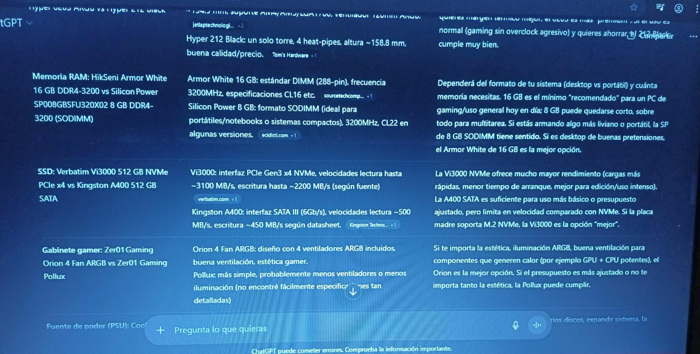
Tabla comparativa generada con ayuda de IA + validación (parte 2)
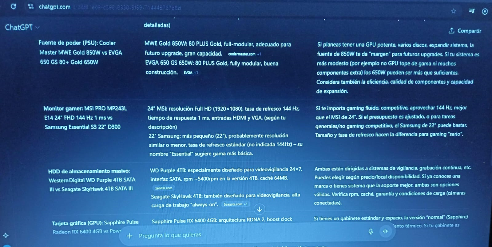
Fuentes externas para verificación
- Gigabyte B550M DS3H especificaciones: GIGABYTE.com
- Gigabyte A520M H especificaciones: www.licbplus.com.dz/
- AMD Ryzen 5 5500 especificaciones: https://www.bhphotovideo.com/
- Intel Core i5-14400F especificaciones: https://www.intel.com/
- Cooler Master Hyper 620S especificaciones: jetlaptechnologies.com
- Cooler Master Hyper 212 Black especificaciones: Tom's Hardware.com
- HikSeni Armor White RAM: sourcetechcomputer.com
- Silicon Power SP008GBSFU320X02: ecidisti.com
- Verbatim Vi3000 NVMe SSD: verbatim.com
- Kingston A400 SSD: Kingston Technology Company.com
- WD Purple 4TB HDD: zenitel.com
- Seagate SkyHawk 4TB HDD: Seagate.com
- Sapphire Pulse RX 6400: sapphiretech.global
- PowerColor RX 6400 Low Profile: PowerColor
- Cooler Master MWE Gold 850W: coolermaster.com
- EVGA 650 GS 650W: EVGA.com
Mis elecciones:
Placa madre:
- Usaria la A520M por su sistema modesto, en mi opinion si da una buena calidad no es necesaria que sea "premium" y si con menos costos tengi algo parecido entonces seria la A520M
Procesador:
-Desde mi vista elegiria el intel i5-14400F ya que prefiero algo que dure más años y que sea resistente a lo largo de los años
Cooler
-Yo elegiria el cooler Master Hyper 212 Bl por que con su precio bajo da una buena calidad y no planeo sobrecargar o sobrexplotar demasiado
Memoria RAM
-Elegiria el HikSeni Armor White 16 GB porque considero que sería más eficaz y economico comprar el componente que ya contenga los 16 GB a uno que tengo que comprar dos para alcanzar esa cifra
Disco duro:
-Usaria la Vi3000 NVMe por su mejor calidad y su velocidad, prefiero que tenga una buena compatibilidad y más si tiene buena velocidad
Gabinete gamer
-En este caso, ya que no se busca estética, elegiría la Zer01 Gaming Pollux
Fuente de poder
-Eligira el Master MWE gold 850W por si en un futuro está la posibilidad de expandir el sistema
Monitor gamer
-Mi opcion sería el MSI PRO MP243L E14 24¨ FHD 144Hz 1 ms por la fluidez y para aprovechar el 144Hz para el gaming
Placa de video
-Eligira Western Digital WD Purple 4TB SATA III ya que no hay mucha diferencia entre los dos Discos Duro
Tarjeta gráfica
-Elegiria el Sapphire Pulse Radeon RX 6400 4GB ante su mejor rendimiento térmico
Teclado
-Elegiria el geminis RHOD 300 RGB por sus funciones específicas que pueden ayudar en cuanto a la jugabilidad y comodidad
Mouse
-Eligiria el Fury Scopper RGB al ofrecer más funciones para el gaming a pesar de su precio
Auriculares
-Auriculares elegira el HyperX Cloud II, si no tenemos la cuenta mucho el presupuesto, ante un mejor micrófono y calidad de sonido
Preguntas hechas a la IA
- ¿Qué función cumple la GPU en una PC gamer?
- ¿Porque es importante la Memoria RAM?
- ¿Cuál es la diferencia entre Motherboard y la memoria RAM?
Respuestas de la IA
1) ¿Qué función cumple la GPU en una PC gamer?
La GPU (Graphics Processing Unit) es el componente especializado en el procesamiento y renderizado de gráficos. Su función principal es ejecutar los cálculos necesarios para generar las imágenes, animaciones y efectos visuales que se muestran en el monitor durante la ejecución de un videojuego o aplicación gráfica. A diferencia del CPU, la GPU está optimizada para realizar operaciones en paralelo, lo que permite manejar grandes volúmenes de datos gráficos en tiempo real. En una PC gamer, la GPU determina la calidad visual, la resolución y la cantidad de cuadros por segundo (FPS), siendo fundamental para lograr un rendimiento fluido y una experiencia visual de alta calidad.
2) ¿Por qué es importante la memoria RAM?
La memoria RAM (Random Access Memory) es un tipo de memoria volátil que almacena temporalmente los datos y las instrucciones que el procesador necesita acceder de forma inmediata. Su importancia radica en que permite un acceso rápido a la información, evitando que el sistema deba recurrir constantemente al almacenamiento secundario (como el disco duro o SSD), que es mucho más lento. En una PC gamer, una cantidad y velocidad adecuada de RAM mejora los tiempos de carga, la fluidez del juego y el rendimiento general del sistema, especialmente al ejecutar múltiples procesos simultáneamente.
3) ¿Cuál es la diferencia entre la motherboard y la memoria RAM?
La motherboard (placa madre) es el componente principal que conecta y comunica todos los dispositivos de hardware del sistema: CPU, GPU, RAM, almacenamiento, periféricos, entre otros. Actúa como la base física y eléctrica que permite la interacción entre ellos a través de circuitos y buses de datos.
En cambio, la memoria RAM es un módulo instalado sobre la motherboard cuya función es almacenar temporalmente la información en uso para que el procesador pueda acceder a ella de manera rápida. En resumen, la motherboard integra y coordina todos los componentes, mientras que la RAM almacena datos temporales para agilizar el procesamiento.
Explicaciones en mis propias palabras
1) El GPU sirve para crear imágenes, animaciones y efectos visuales, los cuales hay dentro de los juegos, a gran cantidad, por ejemplo: teniendo las imágenes más detalles sin muchos problemas o errores
2) La memoria RAM es importante para guardan información rápidamente y temporal, con más velocidad y que no tenga que ir a otros almacenadores más lentos
3) La diferencia entre Motherboard y la memoria RAM es que la motherboard es lo más importante en una computadora ya que con eso funciona todo los demás mientras que la memoria RAM sirve para almacenar datos temporales y llegar a ellos en menor tiempo
Capturas de interacción con la IA
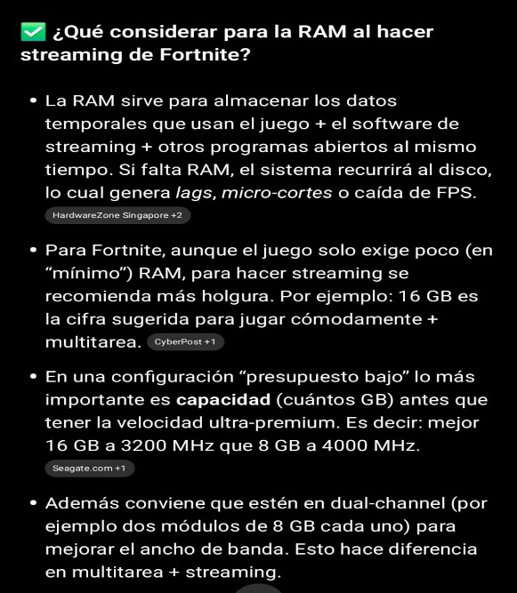
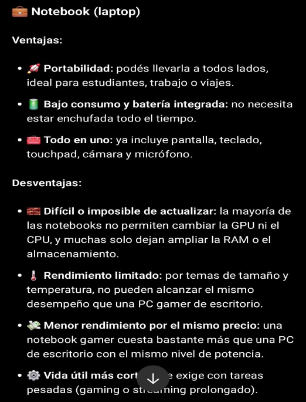
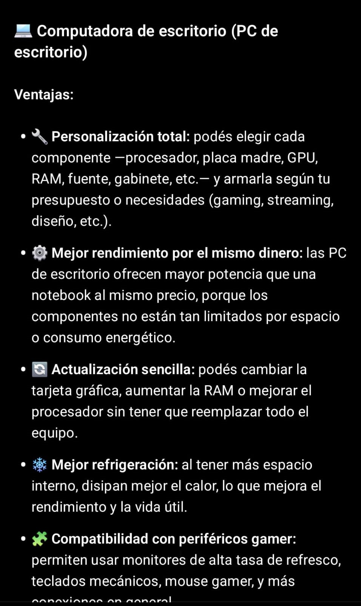
¿Qué memoria RAM es mejor para streamear en Fornite con un presupuesto bajo? (imagen 1)
-Desde mi opinión en este caso estoy de acuerdo ya que la IA menciona que el juego Fornite exige un poco en requisitos en base a la memoria RAM que en este caso solamente serian 16GB como la cifra que siguiere el juego. También por eso se eligió la memoria Hiksemi Armor White que abarca esa cifra de GB
¿Para armar desde cero que es mejor una notebook o una computadora de escritorio?
(imagen 2 a la 5)
-En este caso la IA deja más a la opinión y gustos de cada persona, considero que acierta en las desventajas de cada una como también en las ventajas. Desde experiencia propia acierta en la parte de las notebooks que son muy difíciles de actualizar como también en el punto que su estabilidad o como dice allí "vida útil" es muy baja si deseas exigirle un poco. Lo cual te limita a muchas cosas, por ejemplo: no poder jugar a un juego que en una computadora de escritorio si dejaría.
Pero también acierta en la desventaja de la computadora de escritorio que no es portátil, son demasiados pesadas y al tener tantos cables es muy complicado de mover
Imagen generada con IA que represente el proyecto
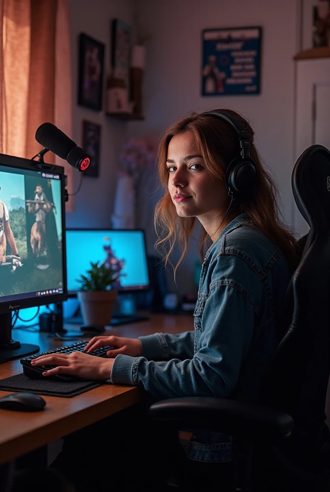
Titulo de la imagen: "A pequeños pasos"
En la imagen se ve a una chica con un pequeño set up, pequeño, no tan extravagante pero funcional, pero con futuro por lo que se ve al fondo que comienza a tener otra pantalla, tiene un proyecto para mejorar y seguir.
Representa el camino como estudiante de primeros años donde apenas conoces el mundo de la tecnología, comprados de algunos que desde niños ya la conocen, tu a diferencia vas paso a paso, pero con seguridad y construyendo un futuro
Conclusiones finales
● ¿Cómo te ayudó la IA en este trabajo?
-La IA me ayudo bastante, mayormente con el tema de la compatibilidad entre los componentes y saber que componentes tiene en general la computadora, si fue difícil al hacer el cuadro comparativo
● ¿Detectaste errores o información poco confiable? ¿Cómo lo resolviste?
-mayormente no me base en la información de la IA, la mayoría fueron paginas gamer donde allí saque los componentes e información de ellas para compararlas
● ¿En qué casos preferís buscar información manualmente en lugar de usar IA?
-prefiero buscar manualmente en los casos que no conozco los temas, por ejemplo, en tema del valor de los componentes ya que conocía de antemano que la IA se equivoca con eso. Por lo tanto, si me puse a buscarlo manualmente
FICHA TÉCNICA DE PC PARA STREAMING
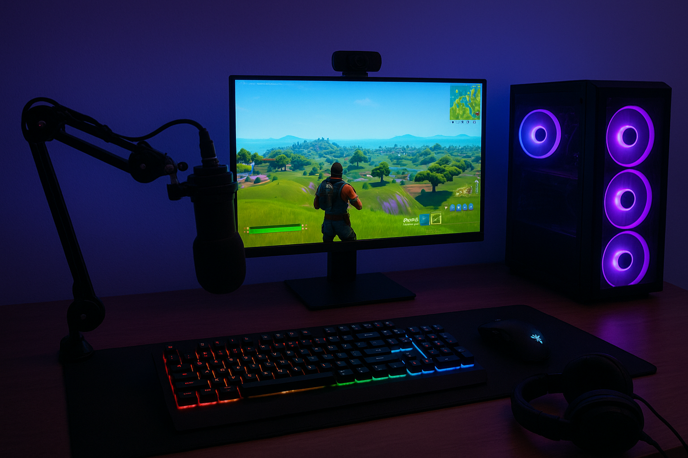
Creador de ficha técnica: Nahuel Schumacher
Tipo de PC: De escritorio
Presupuesto: 1000 dólares (1.300.000 pesos)
Lista de componentes
| Componente | Modelo/Especificaciones | Precio (ARS) | Tienda |
|---|---|---|---|
| Procesador | Intel Core i3-10100F CPU @ 3.60GHz | 116.347 | Acuario Insumos |
| Placa de video | GTX 1660 Super ASUS TUF 6GB | 236.800 | 710tech |
| Placa madre | ASUS Prime H510M-K | 75.000 | Aura Gamer |
| Memoria RAM | Memoria RAM DDR4 8GB 3200MHz KINGDIAN x2 | 50.200 | Armytech |
| Almacenamiento | Disco Rígido HDD 1TB Western Digital Blue | 70.140 | Armytech |
| Fuente de energía | Fuente Thermaltake Smart D2D 600W 80 PLUS | 76.000 | Maximus Gaming Hardware |
| Gabinete | Gabinete Fury Shobo SH4 1 Fan Fixed RGB | 41.800 | Maximus Gaming Hardware |
Periféricos
| Periférico | Modelo | Precio (ARS) | Tienda |
|---|---|---|---|
| Mouse y teclado | Kit Thermaltake Esports Challenger Combo Español | 26.700 | Full H4rd |
| Auriculares | Razer BlackShark V2 X Wired RZ04-03240100-R3U1 | 82.200 | Full H4rd |
| Cámara | Webcam Logitech C920S HD Pro 960-001257 | 122.610 | Full H4rd |
| Monitor | Monitor Gamer 24" MSI Pro MP243L E14 FHD 144Hz 1ms HDMI VGA | 195.991 | XT-PC |
| Sistema operativo | Windows 11 (licencia) | 40.000 | - |
Precio final: 1.133.788 pesos
Dinero restante: 166.212 pesos
Rendimiento esperado
- Más de 60fps como mínimo
- Poder jugar como mínimo en calidad media-alta, buscando llegar a jugar en calidad alta o más
Tabla comparativa de IA y justificación de elección de componentes
🖥️ Placa de Video
| Característica | GTX 1660 Super ASUS TUF 6GB | Radeon RX 6400 4GB Sapphire Pulse LR |
|---|---|---|
| GPU | NVIDIA Turing | AMD RDNA 2 |
| Memoria | 6GB GDDR6, 14 Gbps, 192 bits | 4GB GDDR6, 18 Gbps, 64 bits |
| Reloj Base / Boost | 1530 MHz / 1815 MHz (Gaming Mode) / 1845 MHz (OC Mode) | Hasta 2321 MHz (Boost Clock) |
| CUDA / Stream Processors | 1408 | 768 |
| Conectores Video | 1x DVI-D, 1x HDMI 2.0b, 1x DisplayPort 1.4 | 1x HDMI 2.1, 1x DisplayPort 1.4 |
| Consumo Aproximado | 125W | 53W |
| Recomendación | Ideal para juegos en 1080p con alto rendimiento y mayor VRAM. | Adecuada para juegos ligeros o tareas multimedia, con menor consumo energético. |
Placa Madre
| Característica | ASUS Prime H510M-K (Intel) | ASUS Prime A520M-K (AMD) |
|---|---|---|
| Socket | LGA 1200 (Intel 10ª y 11ª Gen) | AM4 (AMD Ryzen 3000/5000) |
| Chipset | Intel H510 | AMD A520 |
| Memoria RAM | 2x DDR4 hasta 64GB, 2933 MHz (10ª Gen) / 3200 MHz (11ª Gen) | 2x DDR4 hasta 64GB, 4600 MHz (OC) |
| PCIe | 1x PCIe 4.0 x16, 1x PCIe 3.0 x16, 2x PCIe 3.0 x1 | 1x PCIe 3.0 x16, 1x PCIe 2.0 x16, 1x PCIe 2.0 x1 |
| Almacenamiento | 1x M.2 PCIe 3.0 x4, 4x SATA III | 1x M.2 PCIe 3.0 x4, 4x SATA III |
| Red / Audio | Ethernet 1Gb, Realtek ALC887 7.1, HDMI / D-Sub | Ethernet 1Gb, Realtek ALC887 7.1, HDMI / D-Sub |
| Recomendación | Compatible con procesadores Intel, ideal para tareas generales y juegos ligeros. | Compatible con procesadores AMD Ryzen, ideal para tareas generales y juegos ligeros. |
Fuente de Alimentación
| Característica | Thermaltake Smart 600W 80 PLUS | Solarmax 650W 80 PLUS Bronze |
|---|---|---|
| Certificación | 80 PLUS Standard | 80 PLUS Bronze |
| Potencia | 600W | 650W |
| Ventilador | 120 mm ultra silencioso | 120 mm |
| Conectores | 1x 24-pin, 1x 8-pin (4+4), 2x 6+2 PCIe, 4x SATA, 2x IDE | 1x 24-pin, 2x 8-pin (4+4), 2x 6+2 PCIe, 4x SATA, 2x IDE |
| Protecciones | OVP, OCP, SCP | OVP, OCP, SCP |
| Recomendación | Adecuada para sistemas de gama media con consumo moderado. | Adecuada para sistemas de gama media con consumo moderado. |
Fuentes externas
GPUs
Placas madres
Fuentes de alimentación
Justificación de elección de componentes
Placa de video: Se eligió la GTX 1660 Super debido a que cuenta con NVENC, por lo que tendrá mejor rendimiento a la hora de streamear. La RX 6400 no cuenta con NVENC, por lo que no es muy factible streamear con esta.
Placa madre: Se eligió la ASUS Prime H510M-K debido a que es compatible con procesadores Intel, y en esta PC se decidió darle más importancia al procesador.
Fuente de alimentación: Se eligió la fuente Thermaltake Smart 600W 80 PLUS debido a que tenía un precio más reducido que la fuente Solarmax 650W 80 PLUS Bronze y no se consideró tan necesaria la cantidad de 650 watts, optando por tan solo 600 watts.
Interacción con la IA
Comparación GTX 1660 Super vs RTX 3050
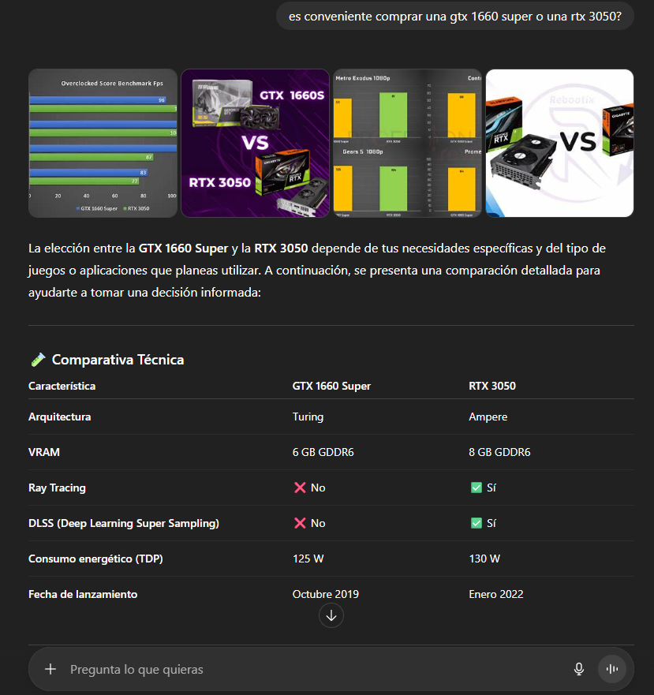
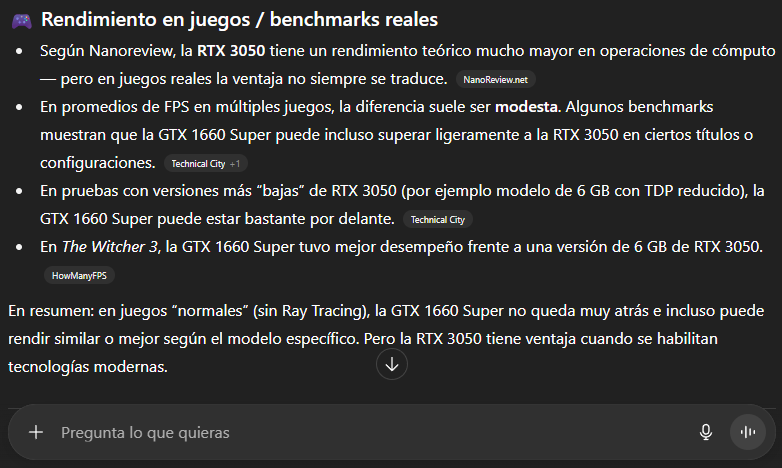
ChatGPT explica que estas 2 placas de video no son muy distintas una de la otra. Puede que la RTX 3050 cuente con más tecnologías como el ray tracing, pero al fin y al cabo no posee un rendimiento muy distinto de la GTX 1660 Super.
Opinión: Es más conveniente la GTX 1660 Super ya que se puede actualizar a futuro con algo MUCHO mejor y es bastante más barata que la RTX 3050.
Sobre actualizaciones futuras
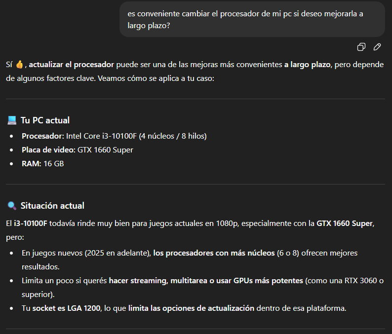
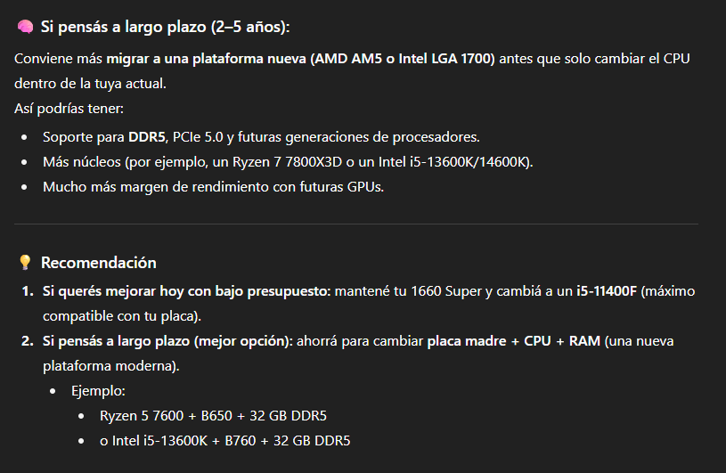
Estoy de acuerdo con la IA. Si se desea mejorar la PC a lo largo del tiempo, lo más conveniente sería mejorar el procesador solo o junto a la placa madre para tener un mejor rendimiento con las nuevas tecnologías. Además, al actualizar el procesador estás actualizando aquel componente que procesa TODA la información de la PC. En cambio, actualizando la GPU solamente mejoras aquel componente que procesa los gráficos, dando así seguramente cuello de botella.
Resumen técnico
¿Qué es el NVENC en una GPU?
IA: NVENC (abreviación de NVIDIA Encoder) es un codificador de vídeo por hardware integrado en las tarjetas gráficas NVIDIA. Su función principal es convertir (codificar) videos o imágenes en movimiento en formato digital comprimido, usando la GPU en lugar del procesador (CPU).
Traducción: En resumen, NVENC se encarga de grabar o transmitir video como un stream sin cargar el procesador porque un chip dedicado dentro de la placa de video.
¿Cómo funciona el dual channel de la memoria RAM?
IA: El Dual Channel (doble canal) es una tecnología que permite que la memoria RAM y el procesador se comuniquen más rápido al usar dos canales de datos en paralelo en lugar de uno solo. Esto no duplica la velocidad de la RAM, pero sí mejora el rendimiento general del sistema, sobre todo en tareas que requieren mucho acceso a memoria como juegos, edición de video o multitarea.
Traducción: La RAM es como una autopista. Si solo hay una memoria RAM es más propenso a atascarse. Al haber 2 memorias RAM, se crean 2 caminos, por lo que aunque no aumenta la velocidad de la RAM, sí se duplica el ancho de banda, por lo que se accede a la memoria más rápido.
Conclusiones finales
¿Cómo te ayudó la IA en este trabajo?
La IA en este trabajo me ayudó bastante a saber qué componentes son compatibles con otros y en base a distintas preguntas realizadas pude aprender bastante sobre los componentes, más de lo que ya conocía de antemano.
¿Detectaste errores o información poco confiable? ¿Cómo lo resolviste?
Realmente no. De las variadas preguntas que he realizado a la IA al hacer el trabajo no detecté ningún error en la información que me proporcionó la IA.
¿En qué casos preferís buscar información manualmente en lugar de usar IA?
Generalmente siempre trato de buscar información sobre componentes por otros medios como Instagram o YouTube, ya que los "influencers" que proporcionan información siempre es muy acertada. Así que podría decir que casi toda la información la busco manualmente, pero sí le pregunto a la IA si los componentes son compatibles.
Introducción
El presente informe tiene como objetivo elaborar un presupuesto individual para el armado de una computadora destinada al streaming de videojuegos, siguiendo los lineamientos del Trabajo Práctico N° 1 de la cátedra Fundamentos de Computación. Se consideran las necesidades de rendimiento tanto para ejecutar los juegos como para transmitir en vivo en plataformas populares como Twitch o YouTube Gaming, manteniendo un presupuesto máximo de 1000 USD según el tipo de cambio vigente.
1. Videojuego seleccionado
El videojuego elegido por el grupo para transmitir es Fortnite, un título multijugador en línea en el que hasta 100 jugadores compiten en una isla con el objetivo de ser el último en pie. Combina disparos en tercera persona con la construcción rápida de estructuras, lo que lo hace dinámico y visualmente atractivo para el público en plataformas de streaming.
Este juego fue seleccionado porque es popular, liviano en términos de requisitos y muy consumido por la audiencia gamer. Cada partida ofrece acción constante y momentos impredecibles, lo que lo convierte en una excelente elección para generar contenido atractivo.
2. Requerimientos técnicos de Fortnite
A continuación, se detallan los requerimientos mínimos y recomendados del juego, junto con los necesarios para realizar streaming fluido en 1080p.
| Nivel | Componente | Especificaciones |
|---|---|---|
| Mínimos | CPU | Intel Core i3-3225 3.3 GHz |
| Mínimos | RAM | 8 GB |
| Mínimos | GPU | Intel HD 4000 / AMD Radeon Vega 8 |
| Recomendados | CPU | Intel Core i5-7300U / AMD Ryzen 3 3300U |
| Recomendados | RAM | 16 GB |
| Recomendados | GPU | NVIDIA GTX 960 / AMD R9 280 |
| Para streaming 1080p | CPU | Intel i3-10100F o superior |
| Para streaming 1080p | GPU | GTX 1660 Super 6 GB VRAM |
| Para streaming 1080p | RAM | 16 GB |
3. Software de streaming utilizado
OBS Studio (Open Broadcaster Software) es el programa seleccionado para realizar la transmisión en vivo. Se trata de una herramienta gratuita, de código abierto y ampliamente utilizada por streamers en todo el mundo. Permite la configuración de escenas, fuentes de video, audio y codificadores, como NVENC o x264, para lograr una transmisión fluida y personalizable. Además, su compatibilidad con plataformas como Twitch, YouTube y Kick la convierte en una opción ideal sin costo de licencia.
4. Tipo de cambio usado
Dólar blue (venta): ARS $1.460 / USD 1 (valor tomado de la prensa actual).
5. Build A - Referencia XT-PC (componentes sueltos)
| Componente | Precio (ARS) | Precio (USD) |
|---|---|---|
| CPU - AMD Ryzen 5 5600X | $246.715,76 | $168.82 |
| GPU - GeForce RTX 3050 (ASUS DUAL OC) | $372.204,08 | $254.96 |
| Motherboard - A520 | $90.000,00 | $61.64 |
| RAM - 16 GB DDR4 | $70.000,00 | $47.95 |
| SSD NVMe 1 TB | $80.000,00 | $54.79 |
| Fuente 650W 80+ | $60.000,00 | $41.10 |
| Gabinete + ventilación | $40.000,00 | $27.40 |
Total estimado: ARS $958.919,84 - USD $657 aproximadamente
Resumen: Configuración equilibrada con procesador Ryzen 5 5600X y GPU RTX 3050, adecuada para streaming en 1080p y juegos en calidad media-alta.
6. Build B - Referencia Armytech (GPU más potente)
| Componente | Precio (ARS) | Precio (USD) |
|---|---|---|
| CPU - Ryzen 5600GT | $211.579,88 | $144.95 |
| GPU - Sapphire RX 7600 | $467.844,73 | $320.58 |
| Motherboard - A520 | $90.000,00 | $61.64 |
| RAM - 16 GB DDR4 | $70.000,00 | $47.95 |
| SSD NVMe 1 TB | $80.000,00 | $54.79 |
| Fuente 650W 80+ | $60.000,00 | $41.10 |
| Gabinete + ventilación | $40.000,00 | $27.40 |
Total estimado: ARS $1.019.424,61 - USD $698 aproximadamente
Resumen: Configuración más potente enfocada en rendimiento gráfico para juegos modernos y transmisión en alta calidad (1080p).
7. Comparación y observaciones
Ambas configuraciones cumplen con el presupuesto máximo establecido. La Build A ofrece un equilibrio entre costo y rendimiento, ideal para quienes buscan una PC versátil. Por su parte, la Build B prioriza la potencia gráfica gracias a la GPU RX 7600, resultando más adecuada para quienes priorizan el rendimiento en juegos y streaming de alta calidad.
8. Conclusión individual
En función del análisis realizado, la configuración Build B representa la mejor opción si el objetivo principal es obtener el máximo rendimiento posible dentro del presupuesto. No obstante, la Build A se mantiene como una alternativa muy equilibrada y con mayor margen para futuras mejoras. Ambas configuraciones permitirían realizar transmisiones estables a 1080p, cumpliendo los requerimientos del trabajo práctico.
9. Interacción con IA
Comparación de componentes
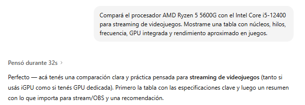
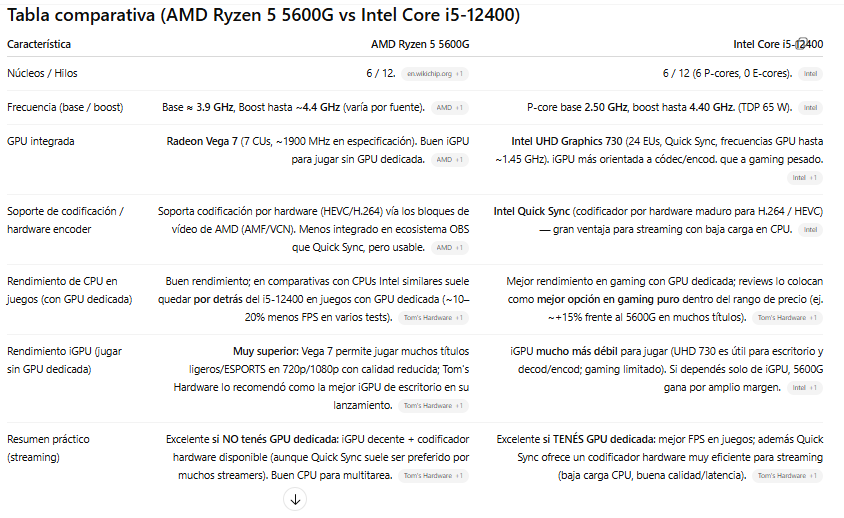

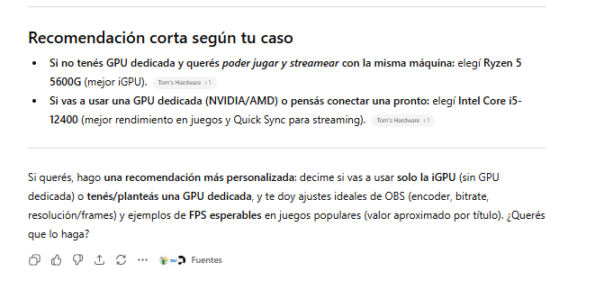
Reflexión sobre la comparación Ryzen 5 5600G vs Intel i5-12400
Estoy de acuerdo con la respuesta de la IA, especialmente en que la elección depende de si se usa una GPU dedicada o no. En mi caso, el presupuesto que elaboré incluye una placa de video dedicada (RTX 3050 o RX 7600), por lo que el i5-12400 sería una opción más eficiente para streaming con GPU, tal como la IA menciona. Su rendimiento por núcleo es superior y la compatibilidad con Intel Quick Sync facilita la codificación en OBS, reduciendo la carga en la CPU durante la transmisión. Sin embargo, también coincido en que, si no se cuenta con una GPU, el Ryzen 5 5600G es más conveniente por su gráfica integrada Vega 7, que permite jugar y transmitir sin necesidad de hardware adicional.
Explicación técnica traducida al "lenguaje común"


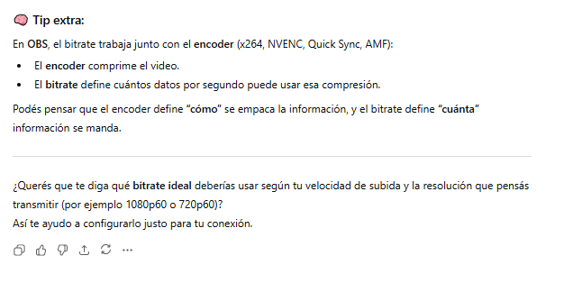
Reflexión sobre bitrate y streaming
La explicación me hizo entender que el bitrate es básicamente cuánta información manda mi PC por segundo cuando hago streaming. Es como si fuera el ancho de una manguera: si es chica, pasa poca agua y la imagen se ve fea o pixelada; si es grande, pasa más agua y la imagen se ve clara y fluida.
Esto me ayuda a entender que no siempre poner el máximo bitrate es mejor: si mi internet no aguanta, la transmisión se corta o se traba. Por eso hay que equilibrar resolución, FPS y bitrate según la velocidad de subida que tengas. También entendí que el encoder es como la "bolsa" que empaca la información, y el bitrate decide cuánta información entra en esa bolsa por segundo.
Esta explicación con IA me sirvió para ver cómo lograr un streaming que se vea bien sin que se caiga por problemas de internet, y por qué hay que ajustar el bitrate según la conexión y la resolución que quiero transmitir.
Imagen generada con IA
Prompt: "Generá una imagen de un setup de streamer gamer económico transmitiendo Fortnite desde su PC, con luces LED y micrófono."
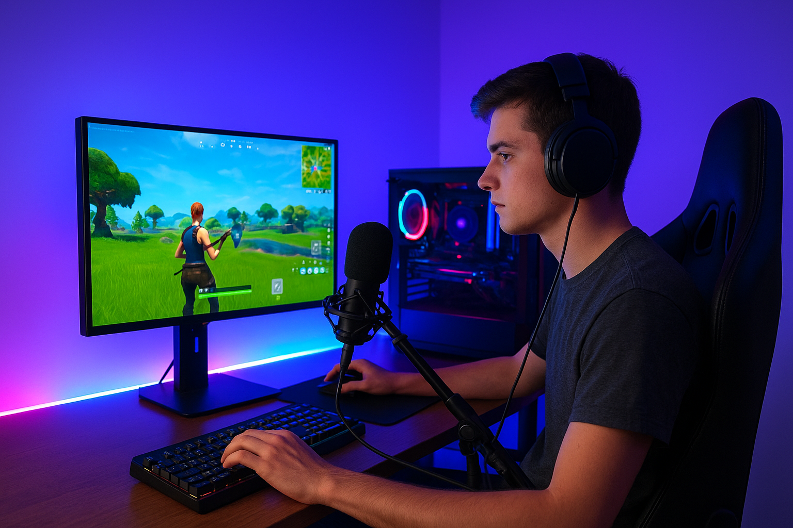
Representa un entorno realista de transmisión pensado para un streamer principiante, coherente con el presupuesto planteado.
Reflexión sobre el uso de IA en el trabajo práctico
La inteligencia artificial resultó una herramienta valiosa durante la elaboración de este trabajo, principalmente para comparar componentes técnicos y traducir conceptos especializados a un lenguaje más accesible. Me permitió comprender mejor términos como bitrate, encoder y las diferencias entre procesadores, lo que facilitó la toma de decisiones informadas sobre qué configuración elegir.
Sin embargo, identifiqué ciertas limitaciones importantes. Los precios de hardware cambian constantemente en Argentina, y la IA no siempre cuenta con información actualizada sobre disponibilidad local o variaciones del dólar. Además, noté que para validar compatibilidades específicas entre componentes (como motherboards y tipos de RAM), fue necesario contrastar con fuentes especializadas, ya que la IA puede generalizar o no contemplar detalles técnicos regionales.
En conclusión, la IA funcionó como un excelente asistente para aprender y organizar información, pero no reemplaza la investigación directa en tiendas locales ni el criterio propio a la hora de armar un presupuesto real. Combinar ambos enfoques resultó la estrategia más efectiva.
Fuentes consultadas
- XT-PC - Listados de componentes y precios (www.xt-pc.com.ar)
- Armytech - Listados de hardware (www.armytech.com.ar)
- La Nación / Ámbito - Cotización del dólar blue (ARS $1.460)
- OBS Studio - Software libre para streaming (obsproject.com)